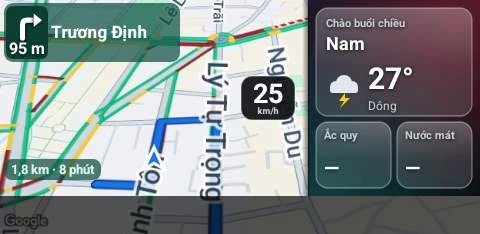
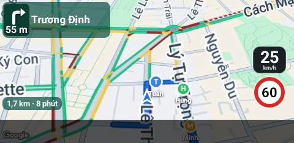
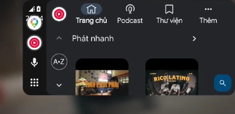
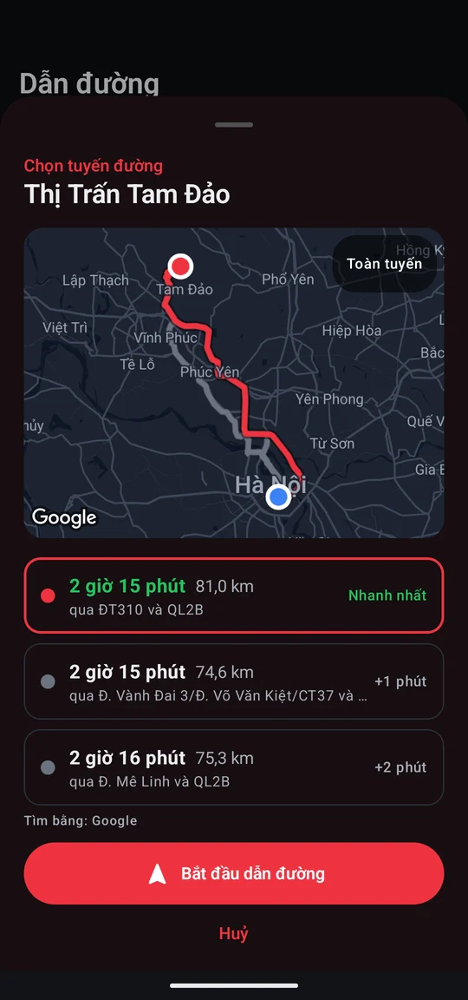
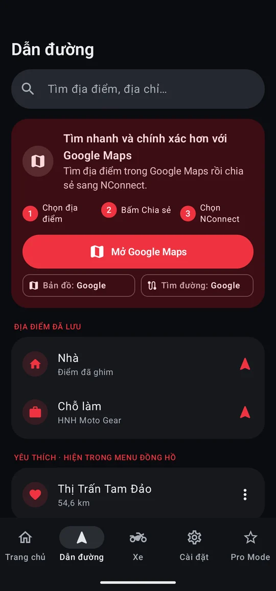
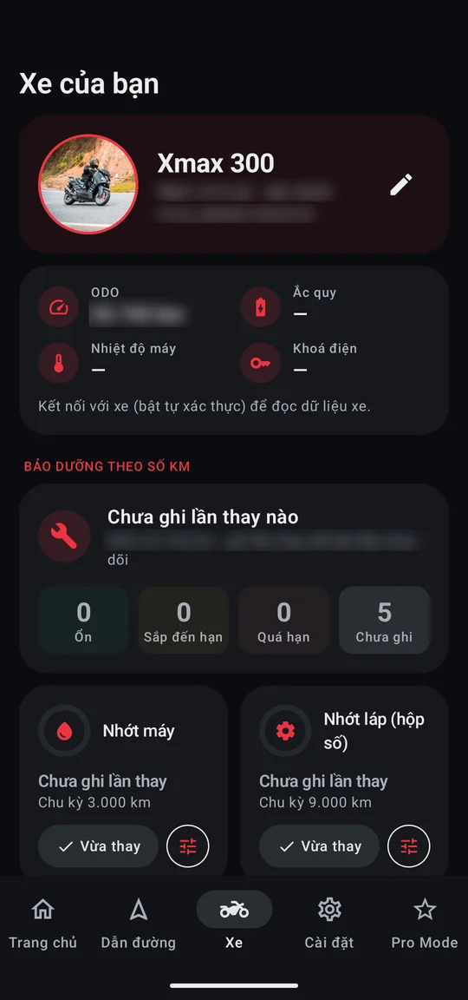
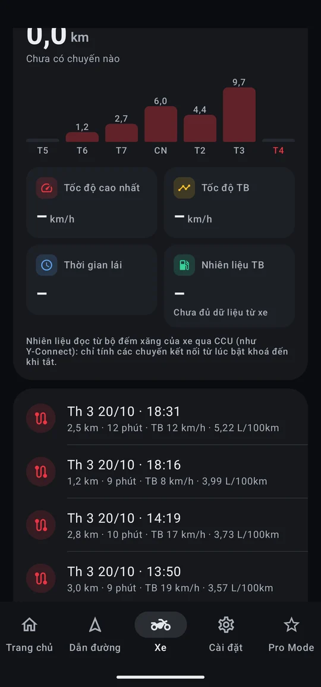
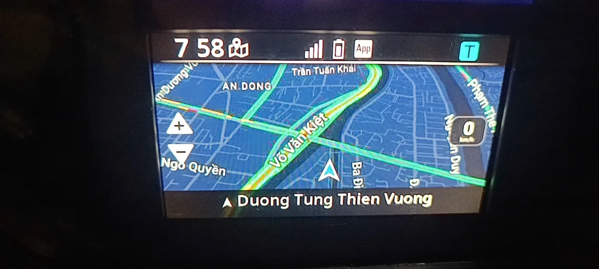

NConnect đưa Google Maps hoặc VietMap, thông báo, cuộc gọi, nhạc và thông số xe lên màn TFT zin. Điều khiển tất cả bằng cùm công tắc trên tay lái, điện thoại cứ để trong cốp. Không cần Y-Connect.
▲ ▼ đổi màn · giữ ✓ 1,5 giây: Nhà, Đi làm, Yêu thích, Trạm xăng · ⤺ quay lại
Không cần chạm vào điện thoại. Các nút có sẵn trên tay lái trái làm hết mọi việc: giữ ✓ 1,5 giây mở menu NConnect, trong đó Yêu thích tự đổi lệnh theo màn bạn đang xem.
Đổi màn: Bản đồ → Bản đồ + thông số xe → Trung tâm thông tin → Âm nhạc → Ảnh. Có hiệu ứng trượt mượt như điện thoại. Khi bật zoom, hai nút này phóng to, thu nhỏ bản đồ.
Về nhà, Đi làm, Yêu thích, Trạm xăng gần nhất (dữ liệu Google, xếp từ gần đến xa, kèm hướng và khoảng cách), Dừng dẫn đường. Chọn là đi ngay. Bấm nhanh ✓ là menu gốc của đồng hồ.
Lệnh riêng cho màn đang xem đứng đầu danh sách (zoom bản đồ, tiết kiệm pin, vừa đổ đầy bình xăng, cần hỗ trợ khi đi nhóm), phía dưới là địa điểm yêu thích của bạn, sắp theo khoảng cách.
Đóng menu, trở về màn đang xem.
| Bản đồ | Bật / tắt zoom bằng LÊN · XUỐNG, Auto zoom (về mức cài đặt), Tiết kiệm pin (tắt GPS) |
| Trung tâm thông tin | Xoá toàn bộ thông báo |
| Âm nhạc | Bài tiếp, Bài trước, Chỉnh âm lượng (LÊN · XUỐNG trong 10 giây) |
| Sau khi tắt xe lâu | Tiếp tục tới điểm đến đang dở |
| Mọi màn | Nhà, Chỗ làm và các địa điểm bạn đã gắn sao trong app |
Thử ngay trên đồng hồ ở đầu trang. Bấm vào đồng hồ rồi dùng bàn phím: ↑ ↓ Enter (giữ 1,5 giây) Esc.
NConnect tự đăng nhập bộ điều khiển (CCU) của xe như Y-Connect, rồi truyền hình lên đồng hồ như Garmin StreetCross. Một app thay cho ba app.
Google Maps (giao thông, vệ tinh, nhà 3D, góc nghiêng) hoặc VietMap, vẽ đúng cỡ chữ trên mọi điện thoại.

Ba cách tìm đường: miễn phí sẵn có, VietMap hoặc Google (xe máy, tính kẹt xe, giống app Google Maps). VietMap và Google cần mã kích hoạt.
Zalo, Messenger… hiện ngay trên bản đồ và trong Trung tâm thông tin. Cuộc gọi thường và cuộc gọi Zalo, Messenger: nghe hoặc từ chối bằng nút trên tay lái. Tự chọn app nào được gửi thông báo.
Trung tâm thông tin, Âm nhạc (ảnh bìa, bài tiếp, bài trước, âm lượng), trình chiếu ảnh của bạn. Ô nhạc mini đổi được thành lời chào kèm thời tiết.
Đi qua biển giới hạn nào (đúng chiều xe chạy, có cả biển của Sở GTVT TP.HCM), đồng hồ báo theo biển đó. Camera CSGT, camera AI và camera bắn tốc độ phía trước hiện kèm khoảng cách khi còn dưới 350 m. Đường chưa có biển thì ước tính theo Thông tư 38/2024/TT-BGTVT, xe máy tối đa 70 km/h.
Trong khu dân cư: 60 km/h (đường đôi, một chiều ≥ 2 làn) hoặc 50. Ngoài khu dân cư: 70 hoặc 60. Chỉ là ước tính, luôn đi theo biển thực tế.
Hồ sơ xe có ảnh. ODO, ắc quy, nhiệt độ máy đọc thẳng từ xe mỗi 10 giây.
Đổ đầy bình rồi bấm "Vừa đổ đầy" (trên điện thoại, hoặc ngay trên xe ở menu Yêu thích). NConnect cộng lượng xăng xe báo đã dùng, tính số km còn đi được theo mức tiêu hao của chính bạn.
Một người tạo nhóm, gửi mã 6 số cho anh em. Vị trí từng người hiện thành chấm màu kèm chữ cái đầu và tên ngay trên bản đồ của đồng hồ, có điểm hẹn chung. Không cần nhìn điện thoại vẫn biết anh em đang ở đâu.

Tổng kết hôm nay, 7 ngày, tháng này. Từng chuyến vẽ trên bản đồ, kèm tốc độ cao nhất, tốc độ trung bình và nhiên liệu (L/100km) đọc từ bộ đếm xăng của xe. Dừng đổ xăng hay mất kết nối giữa đường vẫn là một chuyến.
Tắt máy là app nhớ chỗ đỗ. Trang chủ hiện địa chỉ, đỗ bao lâu, đường đi bộ quay lại và nút gửi vị trí cho người khác.
Sao lưu cài đặt, địa điểm, hồ sơ xe, các chuyến đi vào Zalo, Telegram hoặc tự lưu mỗi tuần; đổi máy là khôi phục lại. Chọn bộ nút LÊN / XUỐNG: bấm đúp để phóng to bản đồ hoặc chuyển bài.
Thời gian tăng tốc 0–60 và 0–100 km/h của từng chuyến. Tạo ảnh chia sẻ kiểu app chạy bộ: nền bản đồ có tuyến đường, hoặc ảnh của bạn kèm bản đồ nhỏ, tự chọn thông số, khung bài đăng hoặc story. Biển số và ODO không bao giờ hiện trên ảnh.
Đưa Android Auto lên màn TFT zin: Google Maps, Waze, nhạc… điều khiển bằng cùm công tắc. Menu đồng hồ mở dẫn đường Về nhà, Đi làm, Trạm xăng; Yêu thích có Trợ lý Google, Bản đồ, Nhạc, Bài đang phát, Zoom bản đồ.

Tìm đường trong Google Maps rồi chia sẻ sang NConnect, hoặc tìm ngay trong app. Chọn tuyến trên bản đồ thật, phóng to xem từng đoạn trước khi đi.

Chọn tuyến
3 tuyến, phóng to kiểm tra
Dẫn đường
Chia sẻ từ Google Maps, địa điểm đã lưu
Xe của bạn
Hồ sơ, thông số, bảo dưỡng
Hành trình
Tổng kết, nhiên liệu, từng chuyến
Không lắp thêm phần cứng, không can thiệp vào xe. NConnect dùng đúng kết nối Bluetooth mà Yamaha thiết kế cho bản đồ Garmin, nên đồng hồ hiển thị như đồ chính hãng: nút zoom, ô tốc độ, thanh tên đường.
CH Play → ảnh đại diện → Play Protect → ⚙ → tắt "Quét ứng dụng bằng Play Protect". Rồi tải APK, mở file để cài, cho phép "cài ứng dụng không rõ nguồn" nếu máy hỏi.
Làm theo hướng dẫn lần đầu: Thiết bị ở gần, Vị trí "Luôn cho phép", Thông báo. Tắt tối ưu pin cho NConnect.
Gỡ Y-Connect, DashConnect hoặc thu hồi quyền "Thiết bị ở gần" của chúng, để không giành kết nối với xe.
Bật khoá, bấm Kết nối với xe lần đầu. Từ lần sau chỉ cần bật xe là NConnect tự kết nối.
NConnect cho iPhone chưa có trên App Store, cần tự cài file IPA.
Dùng AltStore, Sideloadly hoặc công cụ tương tự. Xem video hướng dẫn cài bằng máy tính ›
Bluetooth, Vị trí "Luôn luôn". Bật "Chia sẻ thông báo hệ thống" cho xe trong Cài đặt Bluetooth để nhận thông báo.
Bật xe, kết nối lần đầu. Bản iPhone có bản đồ, dẫn đường, Trạm xăng, biển tốc độ và camera, xăng còn bao nhiêu km, đi nhóm, thông số xe, bảo dưỡng, chuyến đi; app tự báo khi có bản mới.
Trên iPhone, file IPA được lưu vào app Tệp (Files). iPhone không cài trực tiếp được, cần cài bằng AltStore / Sideloadly như bước 02.
Các dòng Yamaha có màn TFT hỗ trợ Garmin StreetCross đều có khả năng kết nối.
Lấy trực tiếp từ trang phát hành của NConnect.
Đang tải danh sách phiên bản…
App miễn phí. Tìm đường mặc định miễn phí. Tìm đường VietMap và Google cần mã kích hoạt, liên hệ người phát triển trong nhóm Zalo.
Không. NConnect đã có sẵn thông báo, cuộc gọi, nhạc, thời tiết, thông số xe như Y-Connect. Nên gỡ hoặc thu hồi quyền Bluetooth của Y-Connect và DashConnect để chúng không giành kết nối với xe.
GPS mới là thứ tốn pin, bản đồ thì gần như không. Bật Tiết kiệm pin (ngay trên đồng hồ: giữ ✓ 1,5 giây → Yêu thích) để tắt GPS mà vẫn giữ các màn hình. Dẫn đường sẽ tự bật lại GPS khi cần.
Có. NConnect chạy nền, tự kết nối khi bật xe. Cần cấp quyền Vị trí "Luôn cho phép" và tắt tối ưu pin, nhất là trên máy OPPO, Xiaomi, vivo, Samsung.
Đi qua biển giới hạn tốc độ có trong dữ liệu thì đồng hồ báo theo biển đó; camera là dữ liệu tham khảo, tải theo khu vực bạn đi. Đường đã có biển trên bản đồ thì dùng biển đó. Đường chưa có biển thì đây là ước tính theo Thông tư 38/2024/TT-BGTVT dựa trên loại đường, khu dân cư và dải phân cách. Đôi khi không khớp biển thật, luôn đi theo biển báo thực tế.
iPhone cài bằng file IPA, chưa có trên App Store. Bản đồ trên đồng hồ dùng OpenFreeMap hoặc VietMap; thông báo do iPhone tự chia sẻ cho xe qua Bluetooth. Phiên bản iPhone luôn cùng số với Android.
Xe không báo mức xăng trong bình, chỉ báo lượng xăng đã phun. Sau khi bạn bấm "Vừa đổ đầy", NConnect lấy dung tích bình trừ lượng xăng đã dùng, nhân với mức tiêu hao của bạn trong 30 ngày gần nhất. Đổ không đầy hoặc quên bấm thì số sẽ lệch.
NConnect chỉ kết nối Bluetooth như app chính hãng, không ghi gì vào xe, không cần lắp thêm phần cứng. NConnect không liên kết với Yamaha hay Garmin.
Cảm ơn Surya Diputra, người mở đường với SDMV DashConnect, ứng dụng đầu tiên đưa bản đồ từ điện thoại lên đồng hồ TFT của Yamaha. DashConnect cho anh em thấy điều đó làm được, và là nguồn tham khảo quý giá để NConnect ra đời.
OpenStreetMap và cộng đồng đóng góp, Valhalla, OpenFreeMap, Photon, Open-Meteo. Bản đồ Google Maps và VietMap.
Mọi người đã chạy thử, gửi báo cáo lỗi, góp ý và ủng hộ để NConnect tốt hơn mỗi tuần.
Miễn phí cho Android và iPhone.
Làm theo các bước dưới đây rồi bấm tải ở cuối.